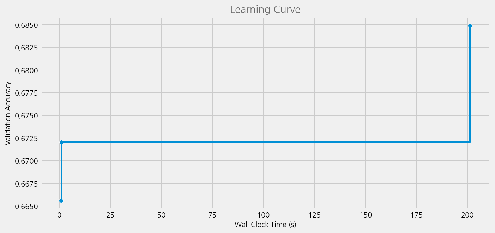
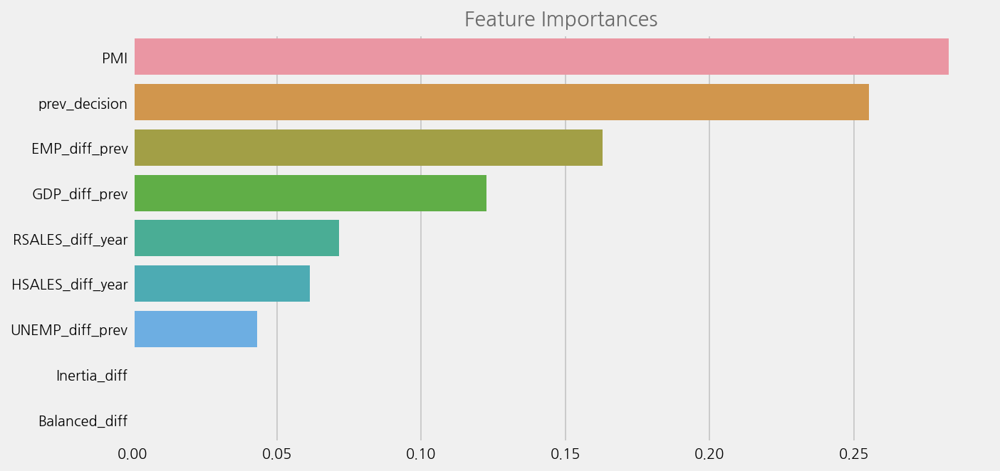

Checking Baseline with AutoML
Contents
Checking Baseline with AutoML#
%config InlineBackend.figure_format='retina'
from ekorpkit import eKonf
eKonf.setLogger("WARNING")
print("version:", eKonf.__version__)
print("is notebook?", eKonf.is_notebook())
version: 0.1.38+40.geb12c43.dirty
is notebook? True
data_dir = "../data/fomc"
Load a feature set#
fs_cfg = eKonf.compose(config_group="dataset=feature")
fs_cfg.name = "fomc_features_small"
fs_cfg.data_dir = data_dir
fs_fomc = eKonf.instantiate(fs_cfg)
INFO:ekorpkit.base:Loaded .env from /workspace/projects/ekorpkit-book/config/.env
INFO:ekorpkit.base:setting environment variable CACHED_PATH_CACHE_ROOT to /workspace/.cache/cached_path
INFO:ekorpkit.base:setting environment variable KMP_DUPLICATE_LIB_OK to TRUE
Auto ML#
model_cfg = eKonf.compose(config_group='model/automl=classification')
model_cfg.dataset = fs_cfg
model_cfg.config.time_budget = 60
model_cfg.verbose = False
model = eKonf.instantiate(model_cfg)
INFO:ekorpkit.base:No method defined to call
model.fit()
Best ML leaner: lgbm
Best hyperparmeter config: {'n_estimators': 10, 'num_leaves': 4, 'min_child_samples': 18, 'learning_rate': 0.2293009676418639, 'log_max_bin': 9, 'colsample_bytree': 0.9086551727646448, 'reg_alpha': 0.0015561782752413472, 'reg_lambda': 0.33127416269768944}
Best accuracy on validation data: 0.672
Training duration of best run: 0.03197 s
model.best_estimator
LGBMClassifier(colsample_bytree=0.9086551727646448,
learning_rate=0.2293009676418639, max_bin=511,
min_child_samples=18, n_estimators=10, num_leaves=4,
reg_alpha=0.0015561782752413472, reg_lambda=0.33127416269768944,
verbose=-1)In a Jupyter environment, please rerun this cell to show the HTML representation or trust the notebook. On GitHub, the HTML representation is unable to render, please try loading this page with nbviewer.org.
LGBMClassifier(colsample_bytree=0.9086551727646448,
learning_rate=0.2293009676418639, max_bin=511,
min_child_samples=18, n_estimators=10, num_leaves=4,
reg_alpha=0.0015561782752413472, reg_lambda=0.33127416269768944,
verbose=-1)model.save()
model.load()
model.show_results()
Best ML leaner: lgbm
Best hyperparmeter config: {'n_estimators': 10, 'num_leaves': 4, 'min_child_samples': 18, 'learning_rate': 0.2293009676418639, 'log_max_bin': 9, 'colsample_bytree': 0.9086551727646448, 'reg_alpha': 0.0015561782752413472, 'reg_lambda': 0.33127416269768944}
Best accuracy on validation data: 0.672
Training duration of best run: 0.03197 s
model.plot_learning_curve()

model.eval()
r2: -0.3066542577943232
mse: 0.7788461538461539
mae: 0.47115384615384615
Accuracy: 0.6826923076923077
Precison: 0.6514423076923077
Recall: 0.6826923076923077
F1 Score: 0.6251761059453366
Model Report:
___________________________________________________
precision recall f1-score support
Cut 0.62 0.28 0.38 18
Hike 0.50 0.12 0.19 17
Hold 0.70 0.93 0.80 69
accuracy 0.68 104
macro avg 0.61 0.44 0.46 104
weighted avg 0.65 0.68 0.63 104
model.plot_feature_importance()

model.get_feature_importance()
| columns | importances | |
|---|---|---|
| 2 | PMI | 28 |
| 1 | GDP_diff_prev | 17 |
| 3 | EMP_diff_prev | 16 |
| 5 | UNEMP_diff_prev | 12 |
| 0 | prev_decision | 7 |
| 4 | RSALES_diff_year | 5 |
| 6 | HSALES_diff_year | 5 |
| 7 | Inertia_diff | 0 |
| 8 | Balanced_diff | 0 |